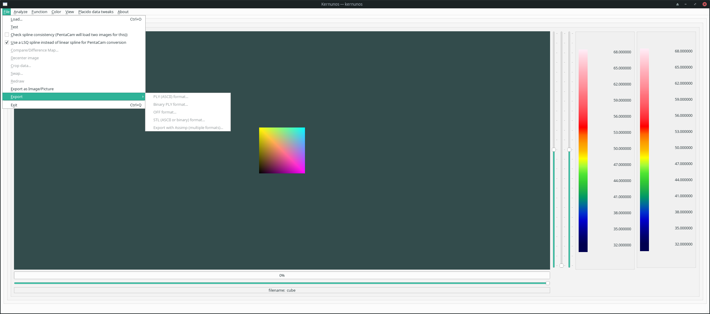

To export a file, select the 'Export...' option in the 'File' menu. The application will then provide you with a file dialog that you can use to select for the desired output format.

See also: Open File, File Dialog